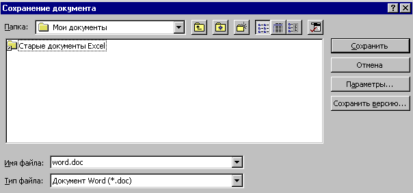
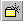

1.3 Сохранение документа
I.3.1 Сохранение нового
документа
I.3.2 Сохранение
существующего документа
I.3.3 Создание копии
документа
1.3.1 Сохранение нового документа
- Щелкните по кнопке
Office
 в левой верхней
части окна. Выберите команду Сохранить.
Появится диалоговое окно "Сохранение
документа".
в левой верхней
части окна. Выберите команду Сохранить.
Появится диалоговое окно "Сохранение
документа".

- Чтобы сохранить документ в другой папке,
выберите нужный диск из списка Папка или
щелкните дважды нужную папку в списке папок.
Чтобы сохранить документ в новой папке, нажмите
кнопку Создать папку  .
- Введите имя документа в поле Имя файла. В
случае необходимости имя файла может быть
довольно длинным, состоять из нескольких слов и
служить кратким описанием документа. Это
упрощает поиск документов. Полное имя файла,
включающее имена диска, сервера, промежуточных
папок и собственно файла, может включать до 255
символов. Имена файлов не должны содержать
следующие символы: правую и левую косую черту (/ и
\), знак "больше" (>), знак "меньше" (<),
звездочку (*), точку (.), вопросительный знак (?),
кавычки ("), вертикальную черту (|), двоеточие (:)
или точку с запятой(;).
- Нажмите кнопку Сохранить диалогового окна
сохранения файла.
Назад | Содержание
| Вперед